1)
Seja
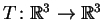
uma
transformação linear ortogonal.
Suponha que o determinante da matriz de T na base canônica é
-1 e que
Resposta:
Afirmamos que
(sem necessitar saber quem é T) um autovalor de T é -1.
Observe que, como T é uma transformação
de
 ,
seu polinômio característico tem grau 3.
Portanto, tem uma raiz real (correspondendo a um autovalor de T).
Como T é ortogonal, os autovalores têm módulo 1.
Logo existe um autovalor real igual a 1 ou -1. Se é -1 não temos
mais nada que ver. Caso contrário as possibilidades
são: um autovalor 1 com multiplicidade três, ou um
autovalor 1 e dois autovalores complexos
(não reais) conjugados de módulo 1,
digamos
,
seu polinômio característico tem grau 3.
Portanto, tem uma raiz real (correspondendo a um autovalor de T).
Como T é ortogonal, os autovalores têm módulo 1.
Logo existe um autovalor real igual a 1 ou -1. Se é -1 não temos
mais nada que ver. Caso contrário as possibilidades
são: um autovalor 1 com multiplicidade três, ou um
autovalor 1 e dois autovalores complexos
(não reais) conjugados de módulo 1,
digamos  e
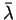.
Como o determinante de T é
o produto dos autovalores (contados com multiplicidade),
no primeiro caso o determinante é 1,
o que é absurdo. No segundo caso o determinante vale
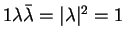,
o que também é absurdo.
e
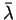.
Como o determinante de T é
o produto dos autovalores (contados com multiplicidade),
no primeiro caso o determinante é 1,
o que é absurdo. No segundo caso o determinante vale
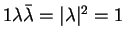,
o que também é absurdo.
Observe que
(1,1,1), (-1,0,1) e (1,-2,1) são vetores ortogonais.
Portanto,
como T é ortogonal,
T(1,1,1) e T(1,-2,1) são ortogonais. Analogamente,
T(-1,0,1) e T(1,-2,1) também são ortogonais. Logo
T(1,-2,1) é paralelo a
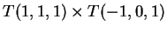.
Logo T(1,-2,1) é paralelo a
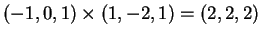.
Isto é, T(1,-2,1) é paralelo a (1,1,1).
Portanto, como T é ortogonal, conserva módulos, e temos que
Para isto
considere a base ortonormal
 onde
onde
Observe que também resolvemos o item (d).
Finalmente, para determinar T(1,0,0),
escreva,
2)
Seja A uma matriz  .
Suponha que
.
Suponha que


Resposta: A matriz A sim é inversível. Os autovalores de A são as raizes do polinômio característico. Ou seja 2 e 3 (com multiplicidade dois). Podemos ver que A é inversível de duas formas: primeiro, como A não tem autovalor zero é inversí'vel. Ou de outra forma, como o determinante de A é o produto dos autovalores contados com multiplicicade, no caso 18. Como o determinante é não nulo é inversível.
A resposta ao item (b) é negativa. Podemos ver isto de duas formas. Duas matrizes semelhantes têm o mesmo determinante. O determinante de A é 18, como vimos, o de D é 12. Logo não são semelhantes.
De outra forma, as matrizes semelhantes têm os mesmos autovalores com a mesma multiplicidade. Mas a matriz D tem o autovalor 2 com multiplicidade 2 e 3com multiplicidade 1. Logo não são semelhantes.
Para o item (c) a resposta é novamente negativa. Um método é calcular os determinantes. Veja que o determinante de D é 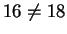.
Outra forma, veja que D tem polinômio característico 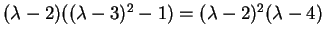. Logo seus autovalores são 4 e 2, que são diferentes dos autovalores de A. Portanto, as matrizes não são semelhantes.
Finalmente, a resposta ao item (d) é negativa.
Toda matriz simétrica é diagonalizável.
Portanto, A somente pode ser semelhante a matrizes diagonalizáveis.
Mas a matriz D do item (d) não é diagonalizável. Seus autovalores
são 3 (multiplicidade 2) e 2 (para ver isto observe que
D é triangular). Mas para 3 somente podemos encontrar um autovetor
linearmente independente:
Os autovetores de autovalor 3 verificam
(D-3I)(v)=(0,0,0), ou seja
3)
Estude que tipo de transformações representam as matrizes.


Resposta:
Observe que a matriz
Considere agora a base canônica 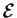
e a base
ortonormal  dada por
dada por
Observe que
P-1=Pte que
Para a segunda matriz
observe que
Finalmente, observe que
a matriz C, é simétrica, não ortogonal
(o produto escalar das duas primeiras colunas é não nulo)
e tem traço
1/3(2+2+2)=6/3=2.
Logo a matriz C é candidata a representar uma projeção
em um plano (espelhamentos e rotações correspondem a matrizes ortogonais,
e projeções ortogonais em um plano têm traço 1).
Em tal caso,
C(1,0,0) e C(0,1,0) pertencem ao plano de projeção,
logo (2,-1,-1) e (-1,2,-1) seriam dois vetores paralelos ao plano.
Verifiquemos que
C(2,-1,-1)=(2,-1,-1) e
C(-1,2,-1)=(-1,2,-1):

4)
Resposta:
Para o item (b) a resposta é negativa:
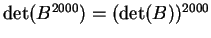,
que é um número não negativo
(2000 é par!). Mas se a matriz menos identidade  tem determinante -1. Logo não existe nenhuma matriz B tal que
B2000=-I.
tem determinante -1. Logo não existe nenhuma matriz B tal que
B2000=-I.
Para o item (a) argumentamos como segue.
Como a matriz A é simétrica é diagonalizável.
Seja D uma forma diagonal de A,
A resposta para o item (c) é negativa, considere
por exemplo a matriz